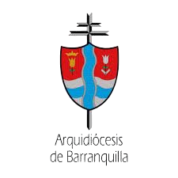
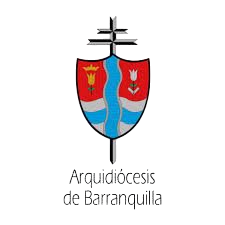

Un programa del Secretariado de Pastoral Social - Caritas
DONATE ♥ 

Alimentar es un acto de justicia, fe y humanidad.
Según el Programa Mundial de Alimentos (WFP) de la ONU, millones de personas enfrentan inseguridad alimentaria aguda a nivel global. En Colombia, la pobreza y el desperdicio de más de 9 millones de toneladas de alimentos al año exacerban esta crisis.
Existimos porque creemos que alimentar es dignificar la vida. Trabajamos por una Barranquilla sin hambre ni desperdicio, donde cada persona acceda a alimentos dignos y construya comunidad.
Nuestro trabajo contribuye directamente al cumplimiento de los Objetivos de Desarrollo Sostenible establecidos por la ONU, especialmente:
ODS 2: Hambre Cero - Combatimos la inseguridad alimentaria promoviendo el acceso digno y equitativo a alimentos nutritivos.

ODS 12: Producción y Consumo Responsables - Rescatamos alimentos en riesgo de desperdicio para redistribuirlos entre quienes más lo necesitan.

Alimentamos con dignidad a más de 260 niños cada día en tres comedores comunitarios. En cada plato se sirve más que comida: se sirve cuidado, comunidad y esperanza.
Ver más
Recolectamos lo que la tierra da y lo transformamos en oportunidades. Con aliados agrícolas y manos solidarias, rescatamos frutas y hortalizas para que nada se pierda... y todo alimente.
Ver más
Un acto de fe que alimenta y une. Llevamos alimentos preparados a parroquias para que, junto con la comunidad, compartamos 100 almuerzos dignos con quienes más lo necesitan.
Ver más
Llevamos esperanza en cada paquete. A través de las parroquias del Atlántico, entregamos alimentos esenciales a familias en situación de vulnerabilidad. Más de 1.000 hogares fueron impactados en 2024.
Ver más
Llevamos alimentos de calidad de fácil acceso. Nuestros mercados móviles visitan parroquias con productos de primera necesidad de fácil adquisición, promoviendo dignidad y sostenibilidad.
Ver más
Un acto de generosidad desde las aulas. Estudiantes de Barranquilla se unen para recolectar alimentos no perecederos que fortalecen nuestros comedores comunitarios. Educar también es compartir.
Ver másCada persona que se suma, transforma. Conoce el impacto real del voluntariado en nuestro banco
Cualquier persona con ganas de servir. No hay distinción de edad, formación o experiencia.
No se requiere experiencia previa, salvo en servicios de alimentación comunitaria, donde se solicita certificado de manipulación de alimentos (BPM).
Tenemos actividades diarias en distintas áreas:
Puedes participar de lunes a viernes en dos jornadas:
PNo. Puedes colaborar el tiempo que desees. ¡Incluso una sola jornada suma!
Sí. Si lo solicitas, podemos emitir una constancia de participación voluntaria.
¡Por supuesto! El voluntariado en grupo es bienvenido.
Asiste con ropa cómoda, discreta y adecuada:
Inscríbete en nuestro formulario y te indicaremos cómo y cuándo puedes asistir:
No pasa nada, solo avísanos con tiempo para poder reorganizar las actividades.


¿Eres parte de una parroquia, fundación, empresa o grupo solidario?
Buscamos empresas y organizaciones que deseen contribuir con alimentos, productos o fondos para nuestros programas sociales. Podemos ofrecer visibilidad, certificaciones de responsabilidad social y colaboración en campañas conjuntas.
DESCARGA AQUÍ PARA CONOCER LOS REQUISITOS DE VINCULACIÓNJuntos podemos más.
“En nuestro departamento existe el hambre, pero también la esperanza”.
Ser Aliado Donante es comprometerse con la justicia, la dignidad y la caridad organizada. Es vivir la fe a través del servicio y extender la mano al que más lo necesita.
Alinea tu estrategia de Responsabilidad Social Empresarial (RSE) con causas reales y visibles.
IMPORTANTE: El Banco de alimentos revisa las postulaciones semanalmente. Si tu organización cumple los requisitos, te contactaremos para iniciar la articulación. Gracias por ser parte del cambio.